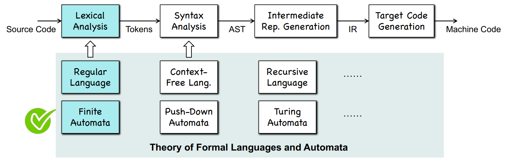
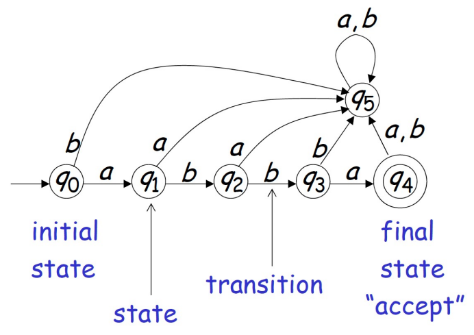

Compilers
Ch1
Front End
Lexical Analysis -> Syntax Analysis -> Semantic Analysis
Lexical Analysis (词法分析)
Create tokens
<token-class, attribute>
Syntax Analysis (语法分析)
- Create the abstract syntax tree (AST)
Semantic Analysis (语义分析)
- Check the correct meaning
- Decorate the AST
IR Generation:
- Generate machine-independent intermediate representation (IR) based on the syntax tree
Middle End
Optimizations
Back End
Instruction Selection
- Translate IR to machine code
- Perform machine-development optimization
Register Allocation
Instruction Scheduling
- (for example: parallelism)
Ch3
Ch3-1 Finite Automata

Empty String: ϵ

Deterministic Finite Automata
A DFA is formally defined as a 5-tuple (Q, Σ, δ, q₀, F), where:
- Q: A finite set of states.
- Σ: A finite input alphabet.
- δ: A transition function δ: Q × Σ → Q that maps a state and an input symbol to a single next state.
- q₀: The start state, where the DFA begins processing.
- F: A set of accept states, F ⊆ Q.
DFA Minimization
DFA Bi-Simulation
Non-deterministic Finite Autometa
Allow ϵ-transitions.
ϵ-Closure
ϵ-closure(q) returns all states q can reach via ϵ-transitions, including q itself.
From NFA to DFA
ϵ-Closure
- When converting an NFA to a DFA, there is no guarantee that we will have a smaller DFA.
Ch3-2 Lexical Analysis
Laws of Regex
- Commutativity and Associativity
- Identities and Annihilators
- Distributive and Idempotent Law
- Closure
Regex = Regular Language
- Any regex represents a
regular languageNFA/DFA - Any
regular languageDFA can be expressed by a regex
Lexical Analysis
symbol table
Pumping Lemma
If L is an infinite regular language (the set L is infinite),
there must exist an integer m,
for any string w ∈ L with length |w| ≥ m,
we can write w = xyz with |xy| ≤ m and |y| ≥ 1,
such that wi = xyiz ∈ L
Ch4-1
Context-Free Language
Context Free Grammar (CFG)
A context-free grammar is a tuple G = (V, T, S, P)
- V: a finite set of non-terminals
- T: a finite set of terminals, such that V ∩ T = ∅
- S ∈ V: start non-terminals
Regular language ⊆ Context-free language
Context-free language = Push-down automata
Left-Most Derivation (=>lm)
In every step derivation, we replace the left-most non-terminal.
Right-Most Derivation (=>rm)
In every step derivation, we replace the right-most non-terminal.
Parse/Syntax Trees
Parse tree
- Every leaf is a terminal
- Every non-leaf node is a non-terminal
Ambiguity
A grammar is ambiguous if there is a string has two different derivation trees.
Eliminating Ambiguity
Lifting operators with higher priority
Using Ambiguous Grammar
Push-Down Automata (PDA)
NPDA
Context-free language = PDA = NFA + Stack = NPDA (Non-Deterministic PDA)
NPDA/PDA is defined by the septuple:
- Q = (Q, Σ, Γ, δ, q0, z0, F)
- Q: a finite set of states
- Σ: finite input alphabet
- Γ: finite stack alphabet
- δ: Q × (Σ ∪ {ϵ})×Γ ⟼ 2Q× Γ*: transition
- q0 ∈ Q: initial state
- z0 ∈ Γ: stack start symbol
- F ⊆ Q: set of final states
Instantaneous Description
An instantaneous description of a PDA is a triple

Language of PDA
At the end of computation, we don’t care about stack contents
acceptance by final states:

acceptance by empty stack:

Equivalence of PDA and CFG
TBD
Properties of CFL
Closure Properties
Given two CFL, L1 and L2, the following are CFL
- L1 ∪ L2
- L1L2
- L1*
- L1R